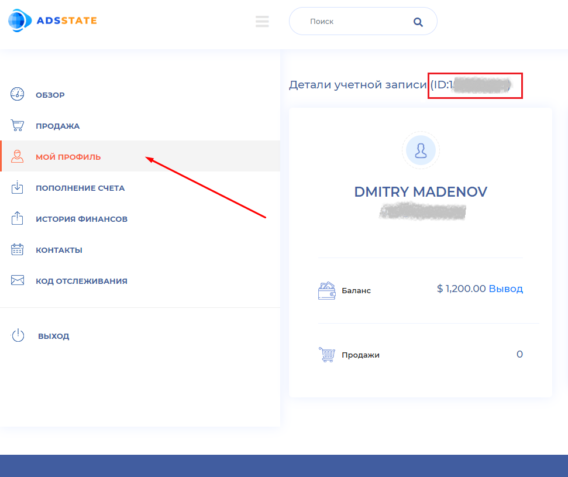
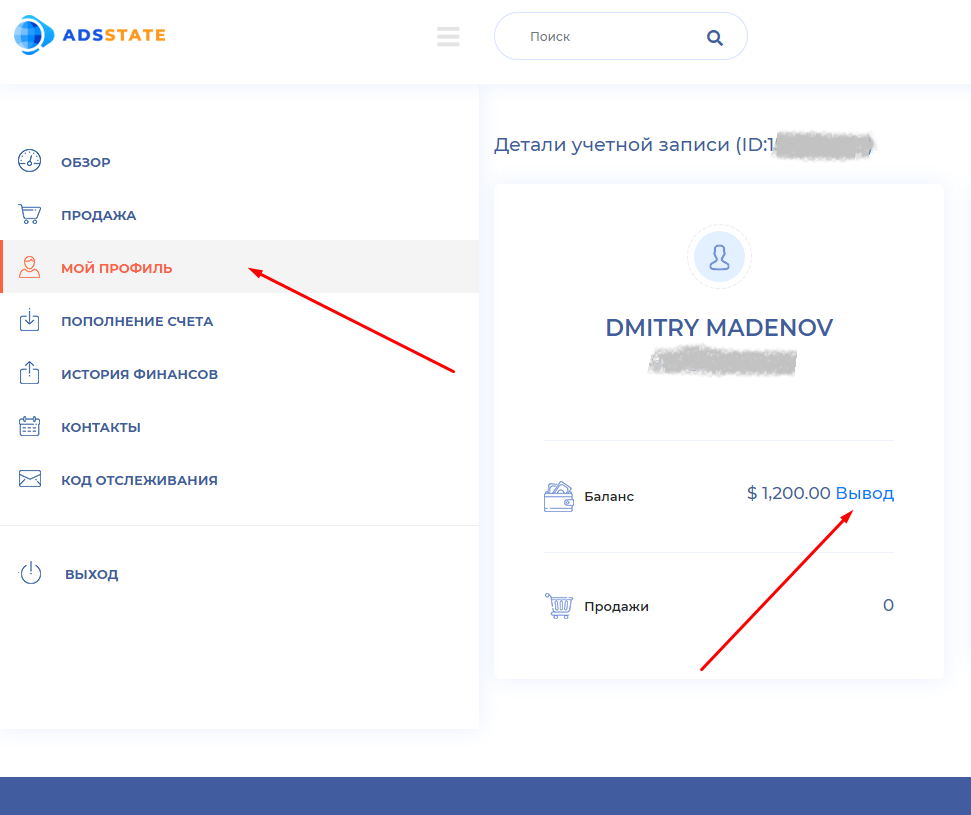

Мой блог
В этой статье Вы подробно, шаг за шагом узнаете, как зарабатывать хорошие суммы денег, занимаясь дропшиппингом. Если Вы никогда не слышали о дропшиппинге, то не стоит бояться этого термина. Освоить и запустить эту деятельность менее чем за сутки под силу каждому. К вашему вниманию четкое, пошаговое и понятное руководство.
Огромное количество людей в мире зарабатывают на этом большие деньги, и являются движущим механизмом большинства продаж в интернете. Дропшиппинг это своего рода спекуляция, позволяющая зарабатывать, не вкладывая своих денег в товар. Дропшиппинг (от англ. drop shipping - прямая поставка) - это такой вид торговой деятельности, позволяющий заниматься реализацией не своих товаров, напрямую от поставщика, или через сайт прокладку, и оставлять себе разницу между оптовой ценой товара, установленной поставщиком и розничной ценой, по которой товар в итоге продается.
В данной статье я опишу схему работы с дропшиппингом, при которой Вам не придется вкладывать деньги в товар, а так же поделюсь секретами, как осуществлять продажи с минимальным вложением сил. Также вы узнаете, как зарабатывают с продаж других дропшипперов и почему выгодно не только продавать, но и обучать дропшиппингу других заинтересованных людей (как это делаю я).
Общее описание.
Дропшиппер, (то есть Вы), создаете на специальных сайтах-витринах, свой магазин. Для этого Вам не нужны технические знания, нужно только зарегистрировать бесплатный аккаунт и Ваш магазин готов.
Затем выбрать товары на AliExpress, ввести ссылки в Вашем магазине, после чего алгоритмы автоматизации сами перенесут товары в Ваш магазин. После чего магазин будет иметь ассортимент.
Далее нужно обеспечить продажи, и тут на помощь приходят сервисы по продажам через платформу, которая объединяет сотни площадок по сравнению цен (таких как Яндекс маркет) во всех странах мира. То есть, загрузив товары в такую «сеть маркетов сравнения цен», они будут обеспечивать трафик (traffic- это поток посетителей на сайт, или простыми словами посещаемость) со всего мира, отдавая приоритет тем странам, где спрос на данную продукцию по заданной цене будет отвечать Вашему предложению. При этом оплата за продажу будет удерживаться только при условии продажи. Естественно Вы будете выбирать такие товары, где Ваша прибыль с единицы товара, будет превышать затрату на продажу. Так как стоимость продажи через «сеть сайтов по сравнения цен» постоянная, то подобрать правильный товар не составит труда.
Об этом, а так же и подробнее обо всех этапах я пишу ниже. Так что не пугайтесь, если, что-то еще не ясно. Кроме того, мне можно задать вопросы по e-mail (Вы можете найти мой e-mail вверху страницы).
И так, условно всю задачу можно разделить на 4 этапа, о которых я подробно со скриншотами напишу ниже:
1. Создание магазина-витрины на специальной платформе для дропшипперов.
2. Автоматический импорт товаров в созданный магазин с AliExpress.
3. Регистрация в «сети маркетов по сравнению цен», и добавление туда товаров добавленных в свой магазин-витрину.
4. Размещение специального кода, который будет передавать данные о состоявшихся продажах в «сеть маркетов по сравнению цен»
Все задачи предельно просты и могут быть реализованы за несколько часов. Детальное описание всех этапов я описываю ниже, но сначала давайте поймем, откуда деньги: кто их платит и за что.
Для начала давайте поймем, откуда деньги: кто их платит и за что.
Ваш заработок Вы будете получать от платформы, на которой создадите свой магазин. Они в свою очередь получают деньги от покупателей.
Дело в том, что в вечной битве за покупателей продавцы на AliExpress, готовы делиться процентом с продаж, лишь бы им обеспечивали трафик (посетителей и соответственно покупателей). Благо в случае с AliExpress все организовано, и любой продавец на AliExpress изначально соглашается давать особые условия партнерам AliExpress и платить до 9 процентов своим крупным афилиатам.
Таким крупным афилиатом и выступает платформа, на которой Вы создаете магазин. Вот тут таблица процентов для афилиатов. Таблица Вам не нужна и ссылку на нее я привожу исключительно для ознакомления: https://alipartnership.com/codex/affiliate-comission-structure/.Таким образом, товар для сайта-витрины, созданном на такой платформе стоит дешевле чем для обычных покупателей на AliExpress.
Кроме того платформа на которой Вы создадите свой сайт-витрину осуществляет еще и небольшую наценку на стоимость товара на AliExpress. При этом расходы по процессингу приема платежей, риски по возврату, и остальные операционные расходы берет на себя платформа.
В результате дропшиппер имеет возможность продавать товар с AliExpress с наценкой, так что покупатель даже не знает, что покупает продукцию, которая пересылается с AliExpress.
Доход с перепродажи Вы с платформой по созданию сайтов-витрин делите по принципу 75% прибыли Ваши, 25% в пользу платформы.
Далее я опишу подробное руководство действий.
Подробное описание действий. Этап № 1 (Создание магазина-витрины на специальной платформе для дропшипперов).
Для того, чтобы картина была предельно понятной, вместе с вами я зарегистрировал новые аккаунты, как на площадке создания магазина, так и на площадке продаж, и буду выстаялять скриншоты на всех этапах. Как писалось выше, для того чтобы начать зарабатывать Вам понадобится зарегистрировать свой магазин на платформе для дропшипперов, которая позволяет создавать свой магазин. Таких платформ множество. Они существуют как платные, так и условно-бесплатные, с возможностью добавлять ограниченное количество товаров. Нас интересует только условно-бесплатная платформа. И мы не будем платить платформе, а будем добавлять меньше или ровно столько товаров, сколько позволяется добавлять бесплатно.
Платформа естественно на английском языке, но для нас это не является препятствием, даже если Вы не знаете английского. Все предельно просто, и я привожу скриншоты.
Так же это не является преградой для получения партнерских вознаграждений от платформы. Они работают с множеством платежных систем, в том числе и российских. Что касается платформы через которую будут происходить продажи, то она имеет перевод на русский язык, так что работа с ней не должна вызывать каких-либо трудностей.
Сначала нужно войти на сайт https://esyshopy.com. Перед Вами откроется главная страница, это и есть платформа для создания магазина-витрины:
После того как Вы войдете на сайт, вверху в меню есть ссылка «CREATE SHOP», то есть на русском «Создай магазин». Жмем на эту ссылку, и видим форму регистрации по созданию магазина для дропшипинга:
Тут все очень просто, указываем на английском: свое имя, фамилию, затем электронную почту, пароль, который хотим для доступа к аккаунту. Далее повторно вводим пароль, для того чтобы проверить что нет ошибки. Затем, если хотите, можно указать свой телефон, но это не обязательно.
Далее Вас просят указать реферальный код. То есть код пригласившего Вас человека.
Это не обязательное поле, но убедительная просьба указать в этом поле мой код, так как это не повлияет на уровень Вашего дохода, но мне даст дополнительный доход. Указав мой код Вы станите моим рефералом, и я буду так же получать доход и с Ваших продаж, вдобавок к собственным продажам. Именно с этой целью я и делюсь с вами своими знаниями. Еще раз подчеркиваю, что доход с рефералов не влияет на доход с личных продаж. Поэтому Ваш доход не сократится. Прошу оценить мой труд этим не сложным с Вашей стороны действием.
Лично я занимаюсь как самостоятельными продажами, так и поиском рефералов, и при желании Вы сможете так же искать своих рефералов.
Свой реферальный код Вы найдете в личном кабинете, и сможете поделиться им с приглашенными уже Вами людьми.
Мой личный реферальный код:
Далее Вам нужно будет зайти на свою почту. Вы должны получить письмо для подтверждения своей регистрации. Подтвердите регистрацию, следуя простой инструкции полученной на почту. Вам нужно будет перейти по ссылке подтверждения регистрации в письме. Если после перехода Вы все еще не авторизированный и Ваше имя не указано в правом верхнем углу, то нажмите на «LOGIN» и авторизируйтесь.
Подробное описание действий. Этап № 2 (Автоматический импорт товаров в созданный магазин с AliExpress).
Мы переходим ко второму этапу, автоматический импорт товаров в свой магазин. После подтверждения электронной почты и авторизации на сайте, нажмите на свое имя в правом верхнем углу, а затем на слово "DASHBOARD" и затем войдите в раздел "IMPORTED PRODUCTS" в левом меню, и вставьте во второе поле сверху ссылку на продукт с сайта AliExpress, а затем нажмите на зеленую кнопку "IMPORT". Продукт появится в списке, и вы сможете после этого, отредактировать его (если потребуется) и затем перенести в магазин. Верхнее поле с названием "Product title" - это поле для поиска, туда не нужно что-либо вводить.
Итак, Ваша задача зайти на сайт https://aliExpress.com. Если Вы видите, что сайт aliexpress автоматически переключился на русский язык (или какой либо иной язык, кроме английского), Вам надо переключить его на английский, выбрав флаг Англии вверху сайта aliExpress. Если Вы этого не сделаете, описание товара в Ваш магазин будет происходить на русском языке, что приведет к отклонению Ваших товаров. Если aliExpress на английском выберете товар и скопируйте его ссылку. Затем вставьте как показано выше. Я, как Вы увидите на картинке чуть ниже, выбрал звуковой проектор (саундбар). Так же возможно, что Вы увидите надпись, что данный товар уже есть в магазине, в этом случае надо найти другой товар. На Esyshopy.com можно импортировать только товары, которых еще у них нет.
Важно:
Перед тем как добавлять товар следует понять какой товар имеет смысл продавать. Не любой товар подходит для продажи, товар должен стоить на https://aliExpress.com не менее 285 долларов, ниже Вы поймете почему.
После нажатия кнопки «IMPORT» описание и фотографии товара автоматически будут перенесены в магазин. Так же наценка цены будет определена магазином автоматически, и прописана в поле цена.
https://esyshopy.com самостоятельно делает наценку товару по следующему алгоритму: либо 10 процентов от стоимости товара либо 28.5 долларов, в зависимости что ниже. Например: Если цена товара на AliExpress.com 120 долларов, то esyshopy.com назначит ему цену на 10 процентов больше, то есть 132 доллара (10 процентов от 120 это 12 долларов, соответственно цена будет 120+12=132). Однако, если цена товара на https://aliExpress.com 500 долларов, то наценка составит 28.5 долларов и цена будет 528.5 долларов, как максимальная наценка магазина, а не 50 долларов как от 10 процентов. То есть наценка товару не может превышать 28.5 долларов, и это важный момент, который определяет какие товары Вам будет нужно выбирать для Вашего магазина. То есть выбирайте товар стоимостью не ниже 285 долларов. Я вернусь к этому еще, когда буду описывать как выбирать товар для ассортимента магазина.
Также Вы можете прочесть на esyshopy.com об их ограничениях на наценку.
Кроме того, повторюсь, Вы можете столкнуться с ситуацией, когда Вам будет написано на английском, что товар является дубликатом товара, который уже есть на платформе. Тогда этот товар Вы не сможете добавить, просто переходите к поиску иного товара.
Далее, нужно зайти в раздел импортированных продуктов (imported products) находящиеся в вашем личном кабинете (Dashboard), и нажать «PUSH TO SHOP», для того, чтобы товар был перенесен уже в сам магазин из раздела импортированных товаров.
После нажатия, проверяем что вся информация экспортировалась нормально из https://aliExpress.com, выбираем категорию товара после чего нажимаем на вкладку << Shipping >> (доставка) и указываем максимальный срок в нашем случае до 45 дней (up to 45 days). То есть так и пишем там: "up to 45 days" и жмем сохранить.
Прокручиваем ниже (если нужно) и жмем на кнопку «PUSH TO SHOP», что переводится как «ПЕРЕДАТЬ В МАГАЗИН».
После этого Вы должны увидеть в разделе "My products"(мои товары), надпись красным цветом WAITING FOR APPROVAL, что означает товар ждет подтверждения модератора. То есть одобрения службой проверки магазина.
После одобрения Вы увидите зеленую надпись IS APPROVED, что означает товар одобрен и можно начинать его продвигать и продавать.
Теперь нужно зарегистрироваться на сайте «сети маркетов по сравнению цен», который будет осуществлять для Вас продажи и сделать так, чтобы «сеть маркетов по сравнению цен» получала от https://esyshopy.com информацию о том что продажа состоялась и что состоялась она именно с Вашего магазина. Для этого мы будем действовать в соответствии с протоколом, который можно получить на сайте «сети маркетов по сравнению цен», на котором мы должны сейчас зарегистрироваться. Но прежде немного объяснения о том, что такое маркет сравнения цен. Маркет сравнения цен, это объединение таких площадок подобных яндекс маркету, они существуют почти во всех странах мира, а так же бывают нацелены не только на страну, но и на город и по языковому принципу. Размещение в таких магазинах как правило платное. Сеть adsstate.com объединяет сотни таких магазинов по сравнению цен. И так переходим к последнему этапу № 3.
Подробное описание действий. Этап № 3 (Регистрация в «сети маркетов по сравнению цен», и добавление туда товаров добавленных в свой магазин-витрину).
Важно:
Недавно «сеть маркетов по сравнению цен» сменила дизайн, поэтому я вслед за ними меняю скриншоты и часть описания. Если вы впервые читаете мой блог, то просто продолжайте чтение.
В новом окне не закрывая магазина, зайдите на сайт https://adsstate.com. Это вышеупомянутая «сеть маркетов по сравнению цен». Именно с помощью нее мы будем продавать нами добавленные товары в магазин. Переключите язык сайта на РУССКИЙ, нажав на флаг вверху. https://adsstate.com работает с большинством платформ для сравнения цен в мире и через них осуществляет продажи. Стоимость продажи в https://adsstate.com фиксированная и равняется 18 долларам за осуществленную продажу. Если Ваш товар не продан Вы не должны ничего им платить. Это позволяет работать с https://adsstate.com предельно удобно, и без риска уйти в минус.
Пройдите процесс регистрации, он хоть и трехэтапный но абсолютно простой и быстрый. Для этого нажмите на оранжевую кнопку "РЕГИСТРАЦИЯ" (там же справа вверху, где и флаг). Обратите внимание, что на главной странице есть сылка длЯ регистрации платформ. Вам туда не нужно, вам нужно регистрироваться как рекламодатель, по кнопке "регистрация вверху страницы", рядом с флагом. На первом этапе все ясно, на втором этапе у Вас спросят название компании, укажите там просто свое имя, если вы частное лицо. Также вас спросят "Имя в счете-фактуре", и тут укажмте ваше имя. На третьем этапе спросят название сайта, не указывайте ничего если у вас нет сайта.

Теперь нужно установить пиксель, который будет передавать информацию о состоявшихся продажах из Вашего магазина в «сеть маркетов по сравнению цен», в которой Вы только что зарегистрировались. Это следует делать только один раз, а не при каждом добавлении товара. Для начала зайдите на страницу "МОЙ ПРОФИЛЬ", и в верхней части страницы Вы должны увидеть номер Вашего магазина. Он из 9 цифр. Сохраните его (только цифры), ниже пример с моей страницы:
Теперь, Вам нужно вернуться в Ваш магазин на сайте esyshopy.com и зайдите там в раздел REFFERS, а затем нажмите на кнопку ADD PIXEL. Что означает, что мы добавляем пиксель учета продаж.
На открывшейся странице укажите в первом поле любое название пикселя. Например можете назвать MY SHOP или NEW SHOP. В поле key нужно указать ключ по которому будет определяться продукт. Укажите тут слово bnrid. Далее в поле Data укажите следующий пиксель код, который соответствует протоколу «сети маркетов по сравнению цен», то есть скопируйте код, который Вы видите внизу:
<script type="text/javascript">
var orderData = JSON.stringify({
order_id: [[+order_id]],
time: Math.round(new Date()/1000),
productData: [
[[+products_loop]]
{
product_link: [[+product_link]],
sell_price: [[+product_total]],
qty: [[+product_qty]]
},
[[+end_products_loop]]
]
});
var img = document.createElement('img');
img.height = 1;
img.width = 1;
img.border = 0;
img.src = 'https://adsstate.com/tracking/?cid=XXXXXXXXX&orderData=' + encodeURIComponent(orderData);
document.body.insertAdjacentElement("afterbegin", img);
</script>
<!-- End Tracking Code for Purchase Complete Page (Thank you page) -->
Важно:
Ближе к концу кода указано https://adsstate.com/tracking/?cid=XXXXXXXXX Вам нужно вместо XXXXXXXXX указать номер Вашего магазина, который Вы запомнили ранее.
В поле description не нужно что-либо указывать. Затем нажмите на кнопку CREATE и настройка по передаче данных об успешных продажах будет завершена.
Обратите внимание на сообщение, которое Вы получите сразу после нажатия CREATE. Если, сообщение красного цвета, и написано: "FAILED TO CONNECT", то что-то Вы сделали не так, и надо перепроверить, нажав на кнопку редактирования, а если сообщение зеленого цвета и написано "SUCCESSFULLY CONNECTED", значит все сделано правильно. То есть система созданного Вами магазина автоматически проверяет, работоспособность кода, так как находит связь с макетом по сравнению цен.
Ниже Вы можете посмотреть картинки когда код указан верно и когда в нем есть ошибка. Первая картинка - это все сделано верно. Вторая есть ошибка.
Если подключение прошло успешно, то на данном этапе следует понять какие товары нужно выбирать для загрузки в Ваш магазин на esyshopy, а затем и на adsstate, и почему именно их. На что еще следует обратить внимание при выборе товара, кроме цены не менее 285 долларов.
Переживать по поводу выбора товара в любом случае не нужно, так как при добавлении товара в «сеть маркетов сравнения цен» (adsstate), он проходит проверку маркетолога, и если они считают, что Ваш товар не имеет спроса, Вам откажут в запуске рекламы для этого товара. В этом случае Вы можете вернуться в магазин (esyshopy) удалить товар (если у вас уже занято все место в магазине), и добавить новый, затем добавить его и в «сеть маркетов сравнения цен». Но, чтобы избежать затрат времени, следуйте следующей выработанной мной логикой.
1. Желательно, чтобы цена не сильно превышала 285, я следую логике, что чем дороже тем сложнее продать. Хотя, конечно это не всегда так. То есть, чтобы товар был не дорогой, но и не дешевле планки, которая требуется для выхода в плюс. Чтобы вложения в рекламу не съело всю прибыль или не увело в минус. Однако, если товар имеет тренд на рынке, и Вам об этом известно, то имеет смысл попробовать его, даже если цена значительно выше этой планки.
2. Чтобы товар был популярен. То есть имел спрос среди как можно большой группы людей. То чем пользуются все, было бы идеально.
3. Чтобы прошло проверку по критериям как магазина, так и рекламной площадки: тематика, качество товара, рыночная цена. Тут все индивидуально, и на усмотрение модераторов. Они знают какие товары легче продаются, и поэтому если товар отклонен, просто загружаем следующий. Обратите внимание, что если товар отклонен, лучше его удалить и в магазине, таким образом Вы освободите место под другой товар. А так как, количество товаров, которые вы можете добавлять бесплатно в вашем магазине ограничено, то это позволяет добавлять новый товар бесплатно. Аналогично, если товар продается, но продается плохо, или продовался хорошо, но затем есть снижение продаж на adsstate, можно удалить товар в магазине и добавить новый.
Как я уже упоминал в Вашем магазине максимальная наценка на товар составляет 28.5 долларов, а получать от магазина свои партнерские отчисления Вы будите в размере 75 процентов от наценки. Значит если наценка максимальная и равна 28.5 долларов, то вы заработаете 21.375 доллара (21.375 - это 75 процентов от 28.5).
Стоимость продажи в https://adsstate.com как я и писал фиксированная и равняется 18 долларам за осуществленную продажу, поэтому прибыль будет составлять 21.375(доход)-18(расход на рекламу) = 3.375. То есть, купив рекламу на 18 долларов, мы зарабатываем 21.375. И чистая прибыль составляет 3.375. Что является почти 19 процентной прибылью от каждых вложенных в рекламу 18 долларов. И является отличной прибылью.
Так же в https://adsstate.com можно продавать до 15 единиц одного и того же товара в месяц. На самом деле это может быть больше или меньше, но как обязательство они берут 15, и затем если нужно пишут Вам о результатах, и если он продается хорошо, могут начать продавать больше.
Есть еще одно ограничение на которое надо обратить внимание. Помните я писал, что https://esyshopy.com условно-бесплатная. Так вот она позволяет загружать в магазин до 20 товаров, а свыше уже стоит 50 долларов за каждые дополнительные товары, что делает не выгодной работу по продаже через https://adsstate.com. Поэтому максимум на что мы можем рассчитывать это на 300 продаж в месяц. То есть 20 товаров, по 15 продаж в месяц. Однако и это отличная прибыль в месяц, и выходит 300*3.375, что превышает чистую прибыль в 1000 долларов в месяц. То есть можно зарабатывать свыше 1000 долларов в месяц.
И так если все понятно, нужно приступить к добавлению товаров при которых достигается максимальная наценка, а затем к заказу рекламы.
Перейдите в adsstate на страницу "ПРОДАЖА", выбрав соответствующий пункт в меню слева. Это страница на которой нужно будет выставлять товар на продажу. Нужно нажать на кнопку "ДОБАВИТЬ ПРОДУКТ", что переводится как добавить продукт.
Не закрывая сайт https://adsstate.com, вернитесь на сайт Вашего магазина на страницу с Вашими товарами, выберите товар, который планируете перенести на adsstate для начала продаж и нажмите на кнопку DETAILS для получения точной ссылки товара.
Скопируйте ссылку товара из броузера.
Вернитесь на https://adsstate.com и продолжите добавление товара на продажу. В первом поле укажите название товара из магазина. Во втором поле скопированную ссылку на товар.

В третьем разделе Вам нужно указать Ваш айди в магазине, для этого вернитесь в магазин в раздел REFFERS и на зеленом фоне Вы должны увидеть ваш refferal id. Скопируйте его и вернитесь на https://adsstate.com и введите в поле "Реферальный id". Страницу с которой нужно скопировать refferal id на esyshopy вы можете увидеть на картинке ниже.
Так же на adsstate Вам нужно будет выбрать категорию товара. В моем случае это электроника. Кроме того надо указать ссылку на картинку. Для этого в магазине нажмите правой кнопкой мыши на картинку товара, и затем нажмите "копировать URL картинки", или если у вас броузер английской версии, должно быть написано "Copy Image Address". И вставьте ссылку в поле "Ссылка на ФОТО". Перед этим выбрав пункт добавления через ссылку, он указан как "Ссылкой". Если же Вам удобнее сначала скачать картинку с Вашего магазина, а потом загрузить, то сначала скачайте, а потом при добавлении товара на adsstate выберите пункт "Загрузить", вместо "Ссылкой", и тогда Вы можете загрузить картинку на сервер. Так же Вам надо указать бюджет, это должна быть сумма кратная 18 долларам. Если вы хотите 1 продажу в месяц, указываете 18, если 2 то 36 долларов, и так далее кратно 18. Максимально это значение может быть 270, тогда продаж будет 15 в месяц. если у вас товаров много, то для каждого товара делаете тоже самое и устанавливаете бюджет 270, если хотите максимальное число продаж. Например я работаю с 20 товарами по бюджету 270 в каждом.
Если у Вас уже 20 товаров в Вашем магазине, то Вы можете перенести все 20 Ваших товаров, из Вашего магазина в «сеть маркетов сравнения цен», если меньше, то перенесите то количество, которое у Вас есть, или то, для которого Вы планируете запустить рекламу. Естественно начать можно с заказа рекламы для любого количества товаров и продаж на https://adsstate.com.
После того как товары в «сеть маркетов сравнения цен» добавлены, нужно пополнить баланс. Для этого зайдите на страницу "Пополнение счета", и пополните счет на сумму желаемого количества продаж, из расчета 18 долларов за продажу. Например если у Вас один товар, и Вы хотите 1 продажу в месяц пополните на 18 долларов, а если хотите максимальное количество продаж для одного товара (то есть 15 продаж), тогда нужно пополнить на 15*18=270. Если товаров 20, то соответственно нужно пополнить на 270*20=5400 долларов. В зависимости от Ваших желаний и возможностей.
В скриншоте ниже Вы видите страницу для пополнения денег. Выберете удобный для Вас способ пополнения и пополните деньги. После этого они появятся на балансе. Какой способ пополнения выбрать зависит от многих факторов, таких как Ваша страна, каким образом Вам удобнее получать от esyshopy.com Ваши партнерские вознаграждения, Ваших личных сложившихся обстоятельств. Рекомендовать в этом плане что-либо, достаточно сложно. Общим можно выделить, что использование интернет-платежных систем удобнее всего. Так как получая прибыль на интернет кошелек, удобнее всего с него потом расплачиваться и за рекламу. Расход на переводы в этом случае минимальный, а иногда и равен нулю, в случае с перфект мани, или минимальный (менее 1 процента от суммы перевода), в случае с вебмани. Что касается, перевода через банк или кредитную карту, все зависит от Вашей геолокации, условий договора с банком и т.д. Поэтому Вам нужно самостоятельно решить как оплачивать. Если Вы склоняетесь в сторону интернет денег и понимаете все преимущество работы с интернет деньгами, то ссылки на системы с которыми я рекомендую работать тут: https://perfectmoney.is и https://www.webmoney.ru . То что Вам нужно, это создать кошелек в одной из этих систем, и пополнить туда деньги удобным способом, после этого Вы можете легко работать с этими системами, переводя деньги внутренними переводами за рекламу, и получая прибыль с Вашего магазина на кошелек, а когда Вы захотите обналичить прибыль просто продайте эти электронные деньги. Сделать это так же легко, как и пополнить. Вы можете продать перфект мани и вебмани тысячами способов с минимальным расходом на обналичивание. Подробнее можно прочесть на их сайтах. Но если Вам удобнее другие способы оплаты, тогда изучите такие способы как банковский перевод, оплату кредитной картой и оплату advcash. Это международная система позволяющая пополнять деньги различными способами. Я ей не пользовался, поэтому что либо написать о ней не могу. Но если Вы знакомы с ней, то на adsstate.com она есть. При определенном желании, разобраться с этими системами не займет более нескольких часов, информации о них предостаточно, и даже более чем достаточно.
В примере ниже Вы можете видеть как у меня на балансе остаток 1200 долларов. Обычно я пополняю 5400, для продажи 300 единиц товаров, и разделяю их между 20 товарами, как описано выше. Но Вы можете пополнить на любую сумму начиная с 18 долларов. У Вас на балансе должна отражаться та сумма, которую пополняете Вы.
Система https://adsstate.com перенесет с Вашего баланса 270 долларов в резерв для продажи 15 единиц товара. Ниже вы видите страницу товаров выставленных на продажу, и ожидающих в данном случае проверки модератора. Через некоторое время, когда проверка модератора будет произведена, вы увидите, что продукт перейдет в статус активных. То есть реклама началась. Или, если деньги вы еще не добавили, а модератор уже проверил и разрешил ваш товар, то статус будет "Утверждено (в ожидании платежа). Пополните баланс.".
Если Вы потом передумаете продавать данный товар, сможете отменить продажи и через раздел "Мой профиль", запросить деньги обратно, нажав на "Вывод" и указав сумму, которую Вы желаете получить из остатка на балансе. Ниже на картинке вы можете видеть где находится данная возможность.
На скриншоте ниже Вы можете видеть уже активную рекламную кампанию, так как мой товар уже прошел модерацию, и зарезервированную под нее сумму. А так же остаток на балансе. Ту же информацию вы можете увидеть и на странице "Продажа".
После продажи, Вы увидите опять же на странице "Обзор", в разделе "Всего продаж", что продажа осуществлена.

В разделе SOLD PRODUCT (проданные продукты), на esyshopy, Вы так же увидите проданные товары, и Вашу прибыль с них. Если Вы добавляли товары с максимальной наценкой, то увидите как в моем случае в размере 21.375 долларов.
Для того, чтобы получить заработанные деньги на esyshopy Вам нужно будет так же указать куда Вы хотите получать деньги. То есть указать Ваш кошелек. Для этого Вам нужно будет в Вашем магазине перейти по надписи вверху на оранжевом фоне (она есть на всех страницах). Ниже пример такой надписи:

И далее выбрать куда Вы хотели бы получать заработанные деньги, и указать номер счета или кошелька. Выплаты происходят в соответствии с описаным в их условиях. Первого числа, с возможной задержкой в 5 рабочих дней. Исходя из опыта, именно первого числа деньги поступают редко, чаще 3-4 числа.
Как видите ничего сложного. Если решите, что желаете зарабатывать больше, то можете использовать свой реферальный код на esyshopy для привлечения других людей заинтересованных в заработке с торговли в интернете. Найти свой код Вы сможете на странице INVITED USERS (то есть приглашенные пользователи). Если Ваши рефералы укажут при регистрации Ваш код, Вы начнете зарабатывать с их продаж. Пример странице с кодом, на скриншоте ниже.
Если будут вопросы, пишите мне. Мой емайл указан вверху страницы. И не забудьте подисаться на мой блог.
Обратите внимание, Этот веб-сайт содержит ссылки на сайты третьих лиц. http://www.madeablog.ml не несет никакой ответственности за работу и содержание сторонних веб-сайтов. В случае вопросов НЕ связанных с методом работы дропшиппинга обращайтесь к этим сайтам.